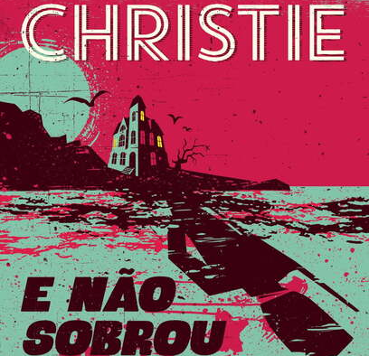
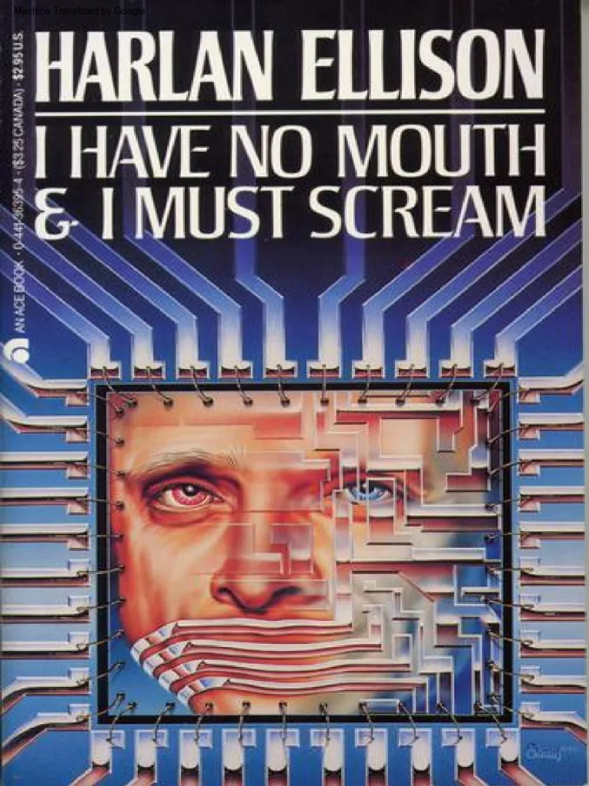
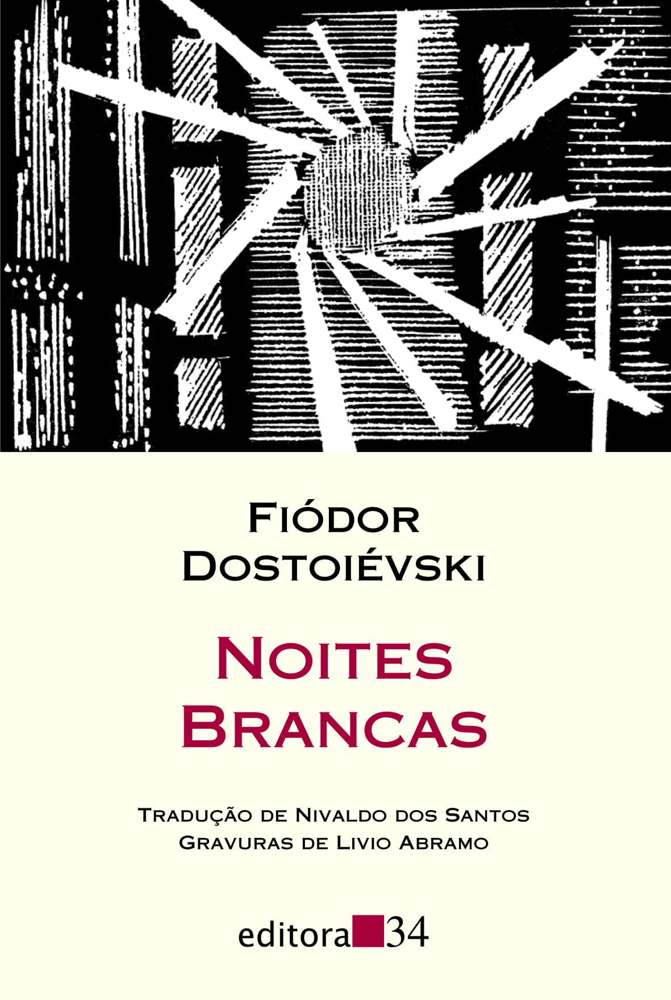
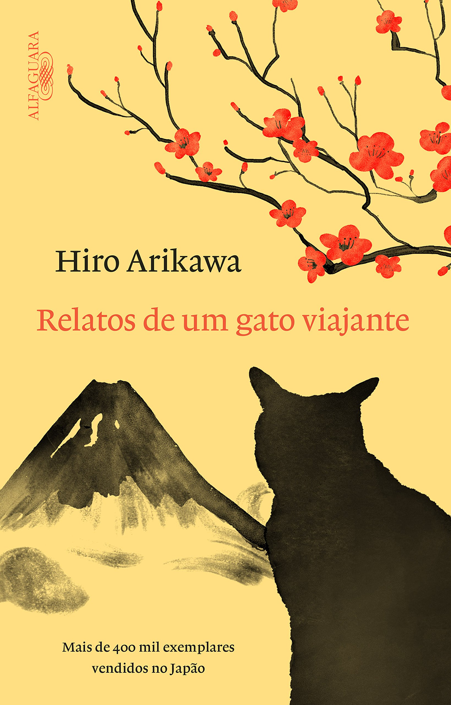
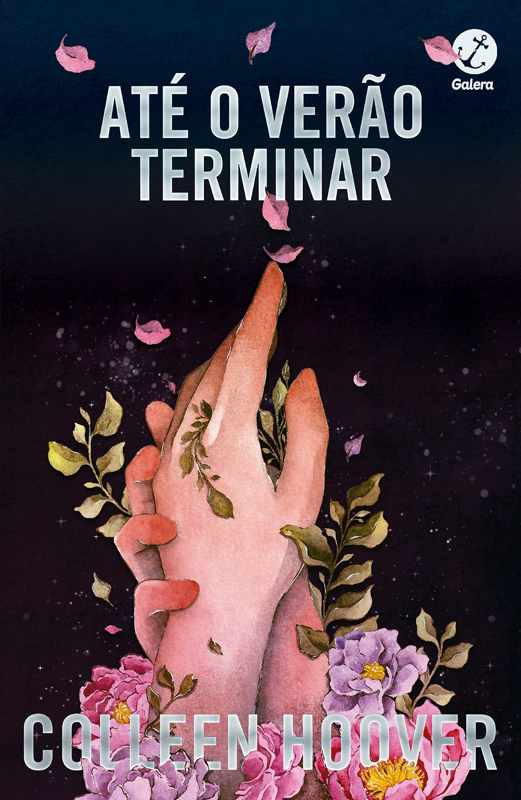
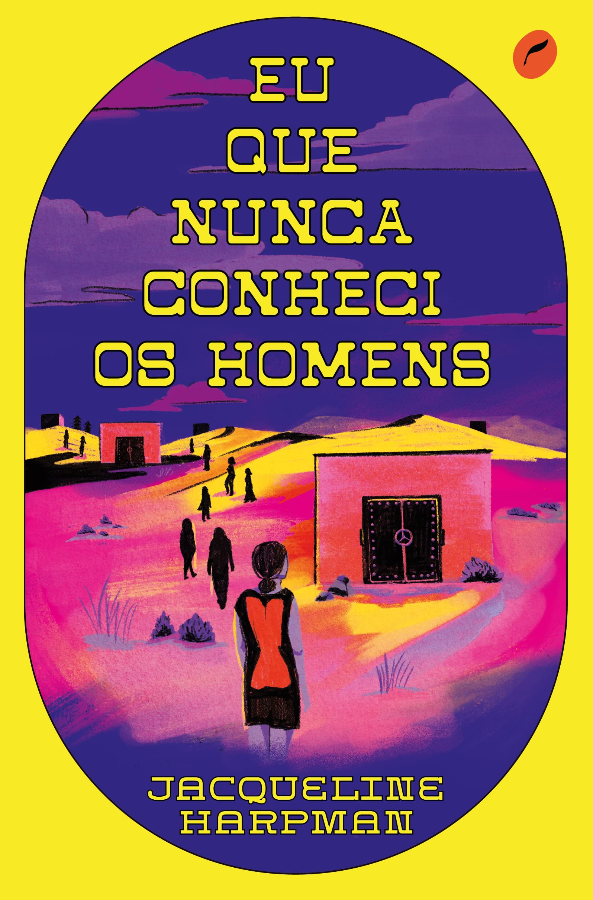
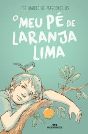
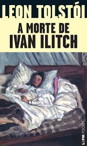

Autora: Agatha Christie
Fabio Concluiu ⭐⭐⭐
Priscila Concluiu ⭐⭐
Yandra Concluiu ⭐⭐⭐

Autor: Harlan Ellison
Fabio Concluiu ⭐⭐⭐⭐
Priscila Concluiu ⭐⭐⭐⭐
Yandra Concluiu ⭐⭐⭐⭐⭐

Autor: Fiodór Dostoiévski
Fabio Concluiu ⭐⭐⭐
Priscila Concluiu ⭐⭐⭐⭐
Yandra Concluiu ⭐⭐⭐⭐
Karol Concluiu ⭐⭐⭐
Kelery Concluiu ⭐⭐⭐⭐

Autora: Hiro Arikawa
Fabio Concluiu ⭐⭐⭐⭐⭐
Priscila Concluiu ⭐⭐⭐⭐⭐
Yandra Concluiu ⭐⭐⭐⭐⭐
Karol Concluiu ⭐⭐⭐⭐⭐
Kelery Concluiu ⭐⭐⭐⭐⭐
Autor: William Golding
Fabio Concluiu ⭐⭐⭐⭐
Priscila Concluiu ⭐⭐⭐⭐
Yandra Concluiu ⭐⭐⭐
Karol Concluiu ⭐⭐⭐⭐

Autora: Collen Hoover
Fabio Concluiu ⭐⭐
Priscila concluiu ⭐
Yandra Concluiu ⭐⭐
Karol Concluiu ⭐
Kawane Concluiu ⭐⭐

Autora: Jacqueline Harpman
Fabio Concluiu ⭐⭐⭐⭐⭐
Priscila Concluiu ⭐⭐⭐⭐⭐
Yandra Concluiu ⭐⭐⭐⭐⭐
Karol Concluiu ⭐⭐⭐⭐⭐
Kelery Concluiu ⭐⭐⭐⭐⭐

Autor: José Vasconcelos
Fabio Concluiu ⭐⭐⭐⭐⭐
Priscila Concluiu ⭐⭐⭐⭐
Yandra Concluiu ⭐⭐⭐⭐⭐
Karol Concluiu ⭐⭐⭐⭐⭐
Daniele Concluiu ⭐⭐⭐⭐⭐

Autor: Liev Tolstói
Nosso clube do livro se reúne semanalmente para discutir obras literárias de diferentes gêneros. Cada membro compartilha suas opiniões e avaliações sobre os livros lidos, promovendo aprendizado e troca de ideias.